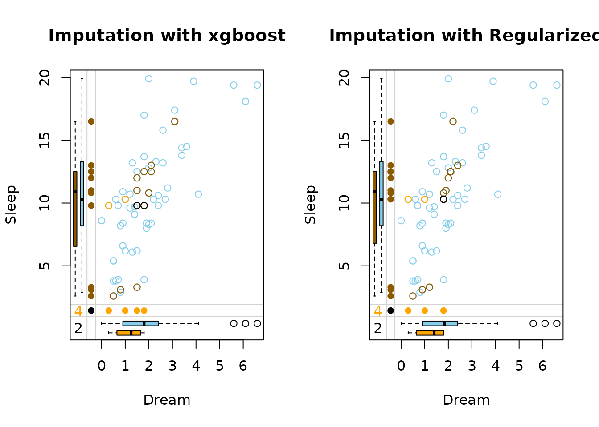

Introduction
This vignette demonstrates how to use the vimpute()
function for flexible missing data imputation using machine learning
models from the mlr3 ecosystem.
Function Arguments
-
data: A datatable or dataframe containing missing values to be imputed. -
considered_variables: A character vector of variable names to be either imputed or used as predictors, excluding irrelevant columns from the imputation process. -
method: A named list specifying the imputation method for each variable. -
pmm: TRUE/FALSE indicating whether predictive mean matching is used. Provide as a list for each variable. -
formula: If not all variables are used as predictors, or if transformations or interactions are required (applies to all X, for Y only transformations are possible). Only applicable for the methods “robust” andc “regularized”. Provide as a list for each variable that requires specific conditions. -
sequential: Specifies whether the imputation should be performed sequentially. -
nseq: The number of sequential iterations, ifsequentialis TRUE. -
eps: The convergence threshold for sequential imputation. -
imp_var: Specifies whether to add indicator variables for imputed values. -
pred_history: If enabled, saves the prediction history. -
tune: Whether to perform hyperparameter tuning.
Data
To demonstrate the function, the sleep dataset from the
VIM package is used.
data <- as.data.table(VIM::sleep)
a <- aggr(sleep, plot = FALSE)
plot(a, numbers = TRUE, prop = FALSE)The left plot shows the amount of missings for each column in the dataset sleep and the right plot shows how often each combination of missings occur. For example, there are 9 rows wich contain a missing in both NonD and Dream.
dataDS <- sleep[, c("Dream", "Sleep")]
marginplot(dataDS, main = "Missing Values")
The red boxplot on the left shows the distrubution of all values of Sleep where Dream contains a missing value. The blue boxplot on the left shows the distribution of the values of Sleep where Dream is observed.
Basic Usage
Default Imputation
In the basic usage, the vimpute() function performs
imputation using the default settings. It uses the “ranger” method for
all variables, applies predictive mean matching, and performs sequential
imputation with a convergence threshold of 0.005.
result <- vimpute(
data = data,
pred_history = TRUE)
print(head(result$data, 3))
#> BodyWgt BrainWgt NonD Dream Sleep Span Gest Pred Exp Danger NonD_imp
#> <num> <num> <num> <num> <num> <num> <num> <num> <num> <num> <lgcl>
#> 1: 6654.000 5712.0 3.3 1.3 3.3 38.6 645 3 5 3 TRUE
#> 2: 1.000 6.6 6.3 2.0 8.3 4.5 42 3 1 3 FALSE
#> 3: 3.385 44.5 10.6 2.3 12.5 14.0 60 1 1 1 TRUE
#> Dream_imp Sleep_imp Span_imp Gest_imp
#> <lgcl> <lgcl> <lgcl> <lgcl>
#> 1: TRUE FALSE FALSE FALSE
#> 2: FALSE FALSE FALSE FALSE
#> 3: TRUE FALSE FALSE FALSEResults and information about missing/imputed values can be shown in the plot margins:
dataDS <- as.data.frame(result$data[, c("Dream", "Sleep", "Dream_imp", "Sleep_imp")])
marginplot(dataDS, delimiter = "_imp", main = "Imputation with Default Model")
The default output are the imputed dataset and the prediction history.
In this plot three differnt colors are used in the top-right. These colors represent the structure of missings.
-
brown points represent
values where
Dreamwas missing initially -
beige points represent
values where
Sleepwas missing initially -
black points represent values where both
DreamandSleepwere missing initially
Advanced Options
Parameter method
(default: “ranger” for all variables)
Specifies the machine learning method used for imputation of each
variable. In this example, different imputation methods are specified
for each variable. The NonD variable uses a robust method,
Dream and Span are using ranger,
Sleep uses xgboost, Gest uses a regularized
method and class uses a robust method.
-
"robust": Robust regression models-
lmrobfor numeric variables: Implements MM-estimation for resistance to outliers -
glmrobfor binary factors: Uses robust estimators to reduce outlier influence
-
-
"regularized": Regularized regression (glmnet)- Uses elastic net regularization
- Automatically handles multicollinearity
- Uses elastic net regularization
-
"ranger": Random Forest- Fast implementation of random forests
- Handles non-linear relationships well
- Fast implementation of random forests
-
"xgboost": Gradient Boosted Trees- State-of-the-art tree boosting
- Handles mixed data types well
- State-of-the-art tree boosting
result_mixed <- vimpute(
data = data,
method = list(NonD = "robust", Dream = "ranger", Sleep = "xgboost", Span = "ranger" , Gest = "regularized"),
pred_history = TRUE
)
dataDS <- as.data.frame(result_mixed$data[, c("Dream", "Sleep", "Dream_imp", "Sleep_imp")])
marginplot(dataDS, delimiter = "_imp", main = "Imputation with different Models for each Variable")
The side-by-side margin plots compare the performance of two imputation methods: xgboost (left) and regularized (right):

xgboost handles missing values with data-driven, uneven imputations that capture complex patterns but may be less stable, while regularized methods produce smoother, more conservative estimates that are less prone to overfitting. The key difference lies in flexibility (xgboost) versus robustness (regularization).
Parameter pmm
(default: TRUE for all numeric variables)
result <- vimpute(
data = data,
method = list(NonD = "robust",
Dream = "ranger",
Sleep = "xgboost",
Span = "ranger" ,
Gest = "regularized"),
pmm = list(NonD = FALSE, Dream = TRUE, Sleep = FALSE, Span = FALSE , Gest = TRUE)
)If TRUE, imputed values are restricted to actual observed values in the dataset, ensuring realism but potentially limiting variability. If FALSE, raw model predictions are used, allowing greater flexibility but risking implausible or extreme imputations.
Parameter formula
(default: FALSE)
Specifies custom model formulas for imputation of each variable, offering precise control over the imputation models.
Key Features:
-
Variable-Specific Models
Each formula specifies which predictors should be used for imputing a particular variable
Enables different predictor sets for different target variables
-
Example:
formula = list( income ~ education + age, blood_pressure ~ weight + age )
-
Transformations Support
-
Handles common transformations on both sides of the formula:
- Response transformations:
log(y),sqrt(y),exp(y),I(1/y) - Predictor transformations:
log(x1),poly(x2, 2), etc.
- Response transformations:
-
Example with transformations:
-
-
Interaction Terms
Supports interaction terms using
:or*syntax (on the right side)-
Example:
formula = list( price ~ sqft * neighborhood + year_built )
Example Demonstration:
result <- vimpute(
data = data,
method = setNames(as.list(rep("regularized", ncol(data))), names(data))
formula = list(
NonD ~ Dream + Sleep, # Linear combination
Span ~ Dream:Sleep + Gest, # With interaction term
log(Gest) ~ Sleep + exp(Span) # With transformations
)
)Interpreting the Example:
- For
NonD:- Uses linear combination of
DreamandSleepvariables - Model:
NonD = β₀ + β₁*Dream + β₂*Sleep + ε
- Uses linear combination of
- For
Span:- Includes interaction between
DreamandSleep - Plus main effect of
Gest - Model:
Span = β₀ + β₁*Dream*Sleep + β₂*Gest + ε
- Includes interaction between
- For
Gest:- Uses log-transformed response
- Predictors include
Sleepand exponential ofSpan - Model:
log(Gest) = β₀ + β₁*Sleep + β₂*exp(Span) + ε
- For
SleepandDreamall other variables are used as predictors
Notes:
- Only works with methods
"robust"and"regularized" - All model.matrix-compatible functions work for predictors (for more information see ?model.matrix)
- Response transformations (left side) are automatically back-transformed
Parameter tune
(default: FALSE)
result <- vimpute(
data = data,
tune = TRUE
)Whether to perform hyperparameter tuning (only possible if seq = TRUE):
- When TRUE:
- Conducts randomized parameter search (after half of the iterations)
- Uses best performing configuration
- When FALSE:
- Uses default model parameters
- Recommended: TRUE for optimal performance
Parameters nseq and eps
(default: 10 and default: 0.005)
result <- vimpute(
data = data,
nseq = 20,
eps = 0.01
)nseq describes the number of sequential imputation
iterations. Higher values:
- Allow more refinement
- Increase computation time
eps describes the convergence threshold for sequential
imputation:
- Stops early if changes between iterations < eps
- Smaller values: Require more precise convergence but may need more iterations
Parameter imp_var
(default: TRUE)
result <- vimpute(
data = data,
imp_var = TRUE
)Creating indicator variables for imputed values adds “_imp” columns (TRUE/FALSE) to mark which data points were imputed. This is particularly useful for tracking imputation effects and conducting diagnostic analyses.
Parameter pred_history
(default: TRUE)
print(tail(result$pred_history, 9))
#> iteration variable index predicted_values
#> <int> <char> <int> <num>
#> 1: 10 Sleep 62 10.7
#> 2: 10 Span 4 7.0
#> 3: 10 Span 13 6.0
#> 4: 10 Span 35 6.0
#> 5: 10 Span 36 7.0
#> 6: 10 Gest 13 42.0
#> 7: 10 Gest 19 225.0
#> 8: 10 Gest 20 90.0
#> 9: 10 Gest 56 33.0When enabled (TRUE), this option saves prediction trajectories in
$pred_history, allowing users to track how imputed values
evolve across iterations. This feature is particularly useful for
diagnosing convergence issues.
Performance
In order to validate the performance of vimpute() the iris dataset is
used. Firstly, some values are randomly set to NA.
library(reactable)
data(iris)
df <- as.data.table(iris)
colnames(df) <- c("S.Length","S.Width","P.Length","P.Width","Species")
# randomly produce some missing values in the data
set.seed(1)
nbr_missing <- 50
y <- data.frame(row=sample(nrow(iris),size = nbr_missing,replace = T),
col=sample(ncol(iris)-1,size = nbr_missing,replace = T))
y<-y[!duplicated(y),]
df[as.matrix(y)]<-NA
aggr(df)The data contains missing values across all variables, with some observations missing multiple values. The subsequent step involves variable imputation, and the following tables present the rounded first five imputation results for each variable.
For default model:
For xgboost model: